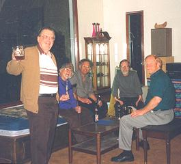
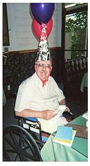
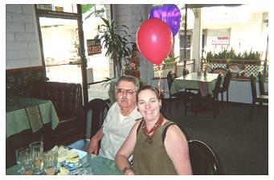
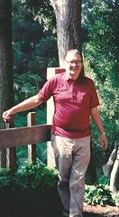
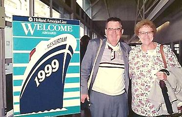
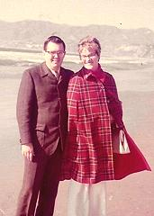
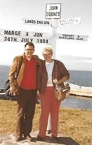
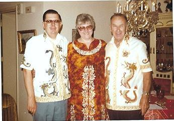
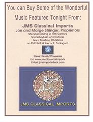
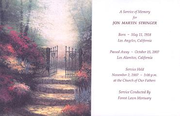

Jon Stringer was a very well liked person. He taught Health and Science at Stephen White Junior High for 30 years. He also, for many years (1964 to 2000) organized the music programs for Musica Donavania. The music for these programs was drawn from his rather massive collection of CDs.
Music, particularly early music (Medieval into Classical) was one of Jon's major interests and he was always willing to share his expertise. Other strong interests were film noir, narrow gage steam railroads and the old Los Angeles Red Car trolleys.
I am now curator of the greater part of his very fine collection. More than 1600 CDs remain in the collection, each logged with a date for every time it was played, and with play time noted for some when it was not provided by the publisher. After his stroke in 2000, Jon and Marge founded and ran a business importing CDs with the music of Medieval Spain: Christian, Muslim and Sephardic.
Jon was born in 1938, son of Clarence and Margaret McKay Stringer. He was married to Marjorie Freeman Stringer for most of his adult life, and they had one daughter, Cynthia Heather Stringer. Jon suffered a severe stroke in 2000, from which he bravely and consistently worked hard to recover from before his death. He died on October 15th, 2007.
Any additional material on Jon Stringer would be welcome.
Contact Andrew Grygus
agryg@clovegarden.com
|
|
|
Click on picture for larger view & Captions         Click on picture for larger view & Captions |